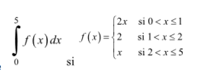
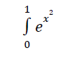

ESCOM
Inicio
EXAMEN 2
1.- Encuentra el área bajo la curva para la función f(x)=x
2
+6x+8 en el intervalo [-4,-2] mediante Sumas de Riemman.
a. 4/3 u
2
b. 15/3 u
2
c. 16 u
2
d. 5/3 u
2
2.- Calcular:
a. -5/3
b. 17/4
c. -5/6
d. 9/4
3.-Calcule:

a. 12/2
b. 54/5
c. 27/2
d. 3/4
4.-Integre por el método de Simpson:

a. 1.4626
b. 5.6414
c. 3.5789
d. 1.5626
5.-Hallar el área de la región definida por las curvas y= 1 / x, y = x, y=1/4 x
a. 0.55 u
3
b. 0.45 u
3
c. 0.69 u
3
d. 3 u
3
6.-Dada la región limitada por x+y=1,y=x+1,determinar el volumen del sólido de revolución que se obtiene al girar la región con respecto al eje dado.
a. 17π.58 u
3
b. 15.25π u
3
c. 35π/3 u
3
d. 10π/3u
3
7.-Calcular el volumen del sólido que se encuentra entre los planos x=-1,x=1. Si las secciones transversales son discos circulares cuyos diámetros van de y=x
2
a y=2-x
2
a. 8π u
3
b. 2π/6 u
3
c. 16π/15 u
3
d. 18π/2 u
3
8.-La base de un sólido es la región del plano xy acotado por las gráficas de y
2
=4x y x=4.Calcular el volumen del solido suponiendo que las secciones transversales que se obtienen al contarlos con planos perpendiculares al eje y son semicírculos con diámetro de la base.
a. 128π/25 u
3
b. 138π/25 u
3
c. 180π/24 u
3
d. 158π/24 u
3
9.-Hallar la longitud del arco de la función y=ln(sec(x)),en el intervalo [0,π/4]
a. ln(10-√9)
b. ln(1+√5)
c. ln(1+√2)
d. ln(1)
10.-Hallar la longitud del arco de la curva 9y
2
=4x
3
comprendido entre los puntos de la curba de abscisa x=0 y x=3
a. 2/5√27 u
b. 3/5√5 u
c. √18 u
d. √8/16 u
Regresar.
Asegurate de contestar todas las preguntas.